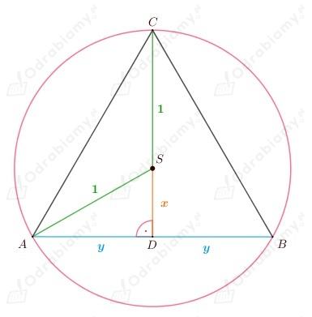
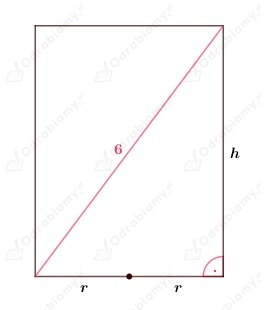
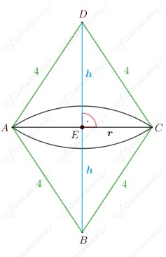
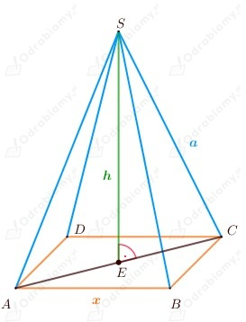
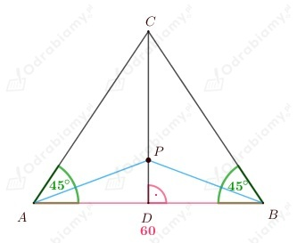
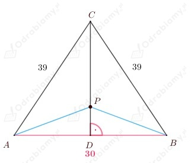

Przyjmijmy oznaczenia jak na rysunku poniżej:

Korzystając z twierdzenia Pitagorasa w trójkącie ADS dostajemy:
założenia:
Zapisujemy wzór funkcji opisującej pole trójkąta:
Zapiszmy wzór funkcji pomocniczej:
Funkcja P przyjmuje wartość największą, gdy wartość największą osiąga funkcja f.
Wobec tego wyznaczamy pochodną funkcji f:
Wyznaczamy punkty krytyczne:
Zauważmy, że:
Funkcja pochodna zmienia znak z dodatniego na ujemny w x=1/2, zatem w tym punkcie funkcja f ma maksimum.
Sprawdzamy, czy maksimum jest również wartością największą funkcji.
Wnioskujemy, że funkcja f przyjmuje wartość największą, gdy x=1/2.
Wyznaczamy pole trójkąta:
Narysujmy przekrój osiowy walca i przyjmijmy poniższe oznaczenia:

Korzystając z twierdzenia Pitagorasa w trójkącie ABC dostajemy:
założenia:
Wiemy, że:
Zatem zapisujemy wzór funkcji opisującej objętość walca:
Wyznaczamy pochodną funkcji V:
Wyznaczamy punkty krytyczne:
Zauważmy, że:
Funkcja pochodna zmienia znak z dodatniego na ujemny w punkcie h=2√3, zatem w tym punkcie funkcja V ma maksimum.
Sprawdzamy, czy maksimum jest również wartością największą funkcji:
Zatem dla h=2√3 funkcja V przyjmuje wartość największą.
Wnioskujemy, że:
Przyjmijmy oznaczenia jak na rysunku poniżej:

Korzystając z twierdzenia Pitagorasa w trójkącie prostokątnym ECD dostajemy:
założenia:
Wiemy, że:
Zatem zapisujemy wzór funkcji opisującej objętość powstałej bryły:
Wyznaczamy pochodną funkcji V:
Wyznaczamy punkty krytyczne:
Zauważmy, że:
Funkcja pochodna zmienia znak z dodatniego na ujemny w h=4√3/3 zatem funkcja V ma w tym punkcie maksimum.
Sprawdzamy, czy jest to wartość największa funkcji:
Zatem funkcja V ma wartość największą dla h=4√3/3.
Wyznaczamy długości przekątnych rombu:
natomiast
zatem:
Wnioskujemy, że przekątne rombu mają długości:
Wiemy, że powierzchnia metalowego zbiornika w kształcie walca bez pokrywy wynosi:
Wobec tego (korzystając ze wzoru na pole koła i pole powierzchni bocznej walca) dostajemy:
gdzie r jest promieniem podstawy walca, a h jego wysokością.
Zatem:
założenia:
Wiemy, że objętość zbiornika, to:
Zapisujemy wzór funkcji opisującej objętość zbiornika:
Wyznaczamy pochodna funkcji V:
Wyznaczamy punkty krytyczne:
Zauważmy, że:
Funkcja pochodna zmienia znak z dodatniego na ujemny w punkcie r=2√3/3 zatem funkcja V ma w tym punkcie maksimum.
Sprawdzamy, czy maksimum jest również wartością największą funkcji:
Wnioskujemy, że funkcja V przyjmuje wartość największą dla r=2√3/3.
Wyznaczamy wysokość pojemnika:
Niech a, b, c będą długościami krawędzi prostopadłościanu.
Dążymy do tego, aby wyznaczyć długości dwóch boków za pomocą trzeciego boku.
Z treści zadania wiemy, że:
zatem:
oraz
zatem
Wiemy, że:
Zatem zapisujemy wzór funkcji V opisującej objętość prostopadłościanu w zależności od zmiennej b:
Wyznaczamy dziedzinę funkcji V:
Z treści zadania wiemy, że:
oraz
Potraktujmy powyższą funkcję jako funkcję kwadratową zmiennej c z parametrem b jeśli ma pierwiastki, to są one dodatnie (wynika to ze wzorów Viète’a). W związku z tym wystarczy, że założymy iż pierwiastki równania istnieją.
Pierwiastki równania istnieją, gdy:
Wyznaczamy pochodną funkcji V:
Wyznaczamy punkty krytyczne:
Wiemy, że:
Funkcja pochodna zmienia znak z ujemnego na dodatni w punkcie b=4, zatem w tym punkcie funkcja V ma minimum.
Sprawdzamy, wartości funkcji V dla argumentów znajdujących się na końcu przedziału (dziedziny).
Zauważmy, że:
Wnioskujemy, że funkcja V przyjmuje wartość najmniejszą dla b=2 i b=4 równą 32.
Odp. Najmniejsza możliwa objętość tego prostopadłościanu jest równa 32.
Dany jest graniastosłup prawidłowy trójkątny.
Z treści zadania wiemy, że:
zatem:
założenia:
Wiemy, że:
Zatem zapisujemy wzór funkcji opisującej objętość graniastosłupa:
Wyznaczamy pochodną funkcji V:
Wyznaczamy punkty krytyczne:
Wobec tego wyznaczamy wartości funkcji V dla argumentów znajdujących się na końcu przedziału do którego należy x:
Zauważamy, że:
Wnioskujemy, że funkcja V przyjmuje wartość największą dla x=3 m.
Dany jest graniastosłup prawidłowy trójkątny.
Niech x będzie jego krawędzią podstawy, a y wysokością.
Z treści zadania wiemy, że:
wobec tego:
zatem
założenia:
Wiemy, że:
Zatem zapisujemy wzór funkcji opisującej pole powierzchni całkowitej graniastosłupa:
Wyznaczamy pochodną funkcji P:
Wyznaczamy punkty krytyczne:
Zauważmy, że:
Zatem funkcja pochodna zmienia znak z ujemnego na dodatni w x=4, więc w tym punkcie funkcja P osiąga minimum.
Sprawdzamy, czy minimum jest również wartością najmniejszą funkcji:
Wnioskujemy, że dla x=4 funkcja P przyjmuje wartość najmniejszą.
Wyznaczamy wysokość graniastosłupa:
Wnioskujemy, że krawędź podstawy graniastosłupa ma długość:
natomiast wysokość:
Dany jest ostrosłup prawidłowy czworokątny. Wiemy, że jego krawędź boczna ma długość a.
Niech x będzie długością krawędzi podstawy ostrosłupa (długością boku kwadratu), a h wysokością ostrosłupa.
Naszkicujmy rysunek pomocniczy:

Zauważmy, że:
Zatem korzystając z twierdzenia Pitagorasa dla trójkąta ECS dostajemy:
założenia:
zatem
Wiemy, że:
Zapisujemy wzór na objętość jako funkcje zmiennej h:
Wyznaczamy pochodną funkcji V:
Wyznaczamy punkty krytyczne:
Zauważmy, że:
Zatem funkcja V osiąga maksimum dla:
Sprawdzamy, czy maksimum jest wartością największą:
Zatem funkcja V przyjmuje wartość największą, gdy:
Zauważmy, że:
zatem:
Wiemy, że:
Zatem wnioskujemy, że kąt między przeciwległymi krawędziami bocznymi ostrosłupa jest rozwarty,
co należało uzasadnić.
Z treści zadania wiemy, że trójkąt ABC jest trójkątem równoramiennym.
a)
Przyjmijmy oznaczenia jak na rysunku poniżej:

Zauważmy, że:
zatem trójkąt ABC jest połową kwadratu.
Niech
zatem
Zauważamy również, że:
zatem trójkąt DBC również jest połową kwadratu, więc:
Niech
zatem
Korzystając z twierdzenia Pitagorasa w trójkącie prostokątnym ADP dostajemy:
wiemy, że:
założenia:
Zatem zapisujemy wzór funkcji opisującej sumę |AP|+|BP|+|CP|:
Wyznaczamy pochodną funkcji f:
Wyznaczamy punkty krytyczne:
Zauważamy, że:
Wobec tego funkcja pochodna zmienia znak z ujemnego na dodatni w punkcie x=10√3 zatem w tym punkcie funkcja f osiąga minimum.
Sprawdzamy, czy w tym punkcie funkcja ma również wartość najmniejszą.
Zatem funkcja f ma w punkcie x=10√3 wartość najmniejszą.
Wyznaczamy długość odcinka |CP|:
b)
Przyjmijmy oznaczenia jak na rysunku poniżej:

Korzystając z twierdzenia Pitagorasa w trójkącie prostokątnym DBC dostajemy:
Niech
zatem
Niech
Korzystając z twierdzenia Pitagorasa w trójkącie prostokątnym DBP dostajemy:
założenia:
Zatem zapisujemy wzór funkcji opisującej sumę |AP|+|BP|+|CP|:
Wyznaczamy pochodną funkcji f:
Wyznaczamy punkty krytyczne:
Zauważamy, że:
Wobec tego funkcja pochodna zmienia znak z ujemnego na dodatni w punkcie x=5√3 zatem w tym punkcie funkcja f osiąga minimum.
Sprawdzamy, czy w tym punkcie funkcja ma również wartość najmniejszą.
Zatem funkcja f ma w punkcie x=5√3 wartość najmniejszą.
Wyznaczamy długość odcinka |CP|: